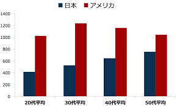

アメリカとの比較
日本のビジネスマンの平均年収は、20代が約350万円、30代が約450万円、40代が約530万円、50代が約645万円といわれています。これと比較すると、日本のエンジニアの年収はどの年代においても高い水準にあるといえるでしょう。 しかし、日本のエンジニアとアメリカのエンジニアで比べると、上の図の通り、年収に大きな差がみられます。ただ、ここで注目すべきは年収の差だけではありません。ポイントは年収の推移の仕方です。 日本の場合、年代が上がるにつれて年収も上がっていきます。対して、アメリカは30代をピークに、40代、50代と年収が下がり続けます。この違いは、アメリカの実力主義、日本の年功序列のあらわれだといえます。
他国のエンジニアの給料は？
- インド：：533万
- インドネシア：192万
- ベトナム：85万
- タイ：195万
- 中国：354万
- 韓国：498万
日本のIT人材の平均年収が598万円とされています。インド・韓国のIT人材が、日本とほぼ同等の年収を手にしていることは意外に思われるかもしれません。さらに注目したいのが、国内全産業の平均年収との比較です。 国内全産業の平均年収ともっとも差があるのはインドネシアで、およそ10倍という驚くべき水準です。物価が安いインドネシアでは、IT業界の仕事に就くだけで平均的な社会人の10倍豊かな暮らしができると考えることもできます。 同じようにインドも約9倍ほどの開きがあり、日本・韓国・中国を除いた国々で給料に対する満足度が高いと回答していることも注目すべきでしょう。 調査対象の国々の中で、給料金額だけで見れば米国に次いで第2位の報酬水準の日本。国内全産業の平均年収の約2倍を手にしているにも関わらず、給料に対して「満足している」「どちらかと言えば満足している」を合わせても5割に達していないことは興味深い結果ですね。
日本のエンジニアの給料はいいのか？
自分の給料額に満足してはいないが、日本国内の平均年収よりは高い水準にあり、アメリカ以外の他国と比べても決して見劣りするわけではありません。 その意味では、客観的に見れば日本のエンジニアの給料が低いというわけではないと言えそうです。あくまでも主観的に給料が低いと感じているだけであり、世界全体で見れば日本のITエンジニアの給料は高い水準を維持しています。 インドやインドネシアの場合、国内では相対的に給料が高い水準となっていますが、それでも絶対的に見れば年収200万円足らず。この金額で日本で暮らそうと思えば、かなりの無理を強いられるはずです。 向上心の高い人であれば、活躍の場を日本国内から米国などの先進国に移すことで、さらに高い年収を得ようと考えることもあるかもしれません。しかし海外にはその土地ならではの文化があり、食生活や住環境も大きく異なるのが普通です。 異なる文化に対応する時間的・体力的なコストを考えれば、日本のIT企業で働き続けるというのも悪い手段ではないはずです。
まとめ
日本の給料はアメリカなどのIT先進国に比べると確かに低いですが日本の平均収入に比べると高い方です。なのでIT先進国に行きキャリアアップするのも良いですし日本の企業で働き続ける事も一つのてだと思います。